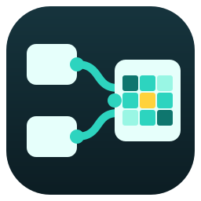

App mode
The inputs chosen with a node's right-click menu (Show in App mode).Your graph is empty.
Drag a node from the library, right-click the canvas, drop an image or a PixelFlow PNG here, or .

PixelFlowYour graph is empty.
Drag a node from the library, right-click the canvas, drop an image or a PixelFlow PNG here, or .